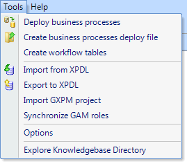

The workflow Tools that are shown in GeneXus IDE are: 
It allows to force the deploy of the business process diagrams into the database.
Through this option a .bpd file is created. It contains the definition of the business process diagrams to impact in the production database. More Information
The workflow tables creation is integrated with Genexus Build. It executes automatically the first time you make a build or run a diagram. Then the creation can be executed manually.
Through this option you will be able to import XPDL Diagrams to the Knowledge Base.
Through this option you will be able to export Diagrams to XPDL format.
Through this option you will be able to import GXPM projects to the Knowledge Base.
Through this option you will be able to force the gam synchronization roles. More Information
Through this option you will be able to configure certain parts of the Development Environment More Information
Through this option you can access the knowledge-base directory through the Windows Explorer More Information
|